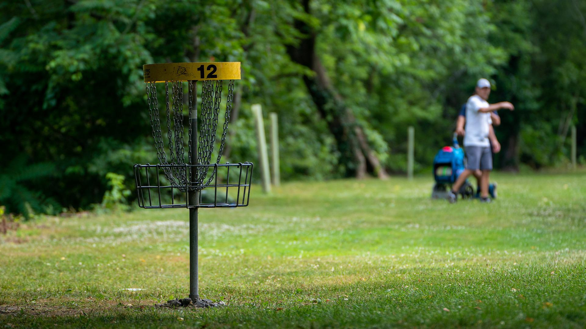
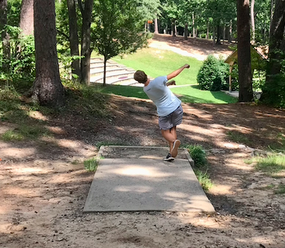

Welcome To Disc Golf Columbia
If you are in Columbia, SC and are interested in disc golf, you are in the right place! This site is a good resource for experienced players and brand-new players alike. Our goal at Disc Golf Columbia is for people to have a way to learn more about the sport and see what Columbia has to offer in the disc golf world. Please navigate through each part of this website and see what parts of it may be beneficial to you, and if you have any further questions, please reach out to us through the button below!
Let's Talk!
Gallery:
One of the coolest parts of disc golf is being outdoors and enjoying nature. Check out some of these cool photos taken at various disc golf courses.
“Disc golf lets me forget that anything else matters. It's all about being outside in beautiful surroundings and enjoying the complexities of the game.” - Steve Logan
About The Creator
Hey, my name is Blake Bailey and I love disc golf. With me being a college student, having a job, and volunteering in my community, I don't go as often as I would like. But that just makes the times I do get to go very special. Disc golf is a getaway for me; it allows me to escape reality for a little while and just go enjoy the outdoor for a bit. For me, disc golf is something that everyone should give a try.
